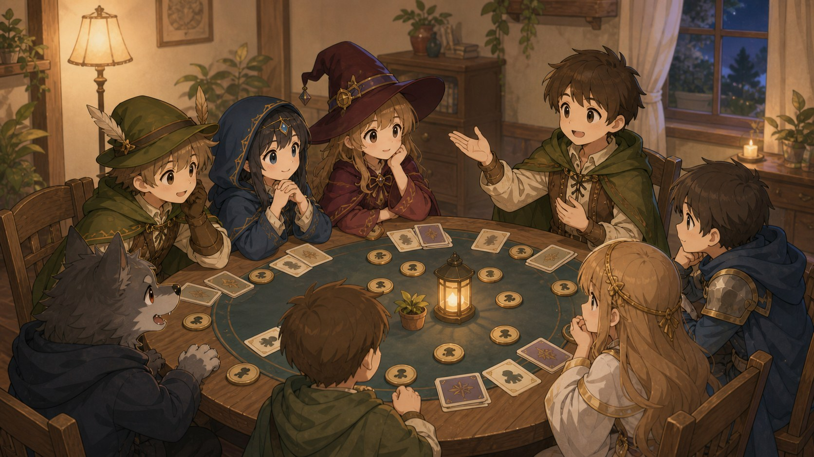

常用术语
以下列出狼人杀玩家发言中的常用术语，具体含义会随版型和房规略有变化。

- 高玩
- 高端玩家。
- 低玩
- 低端玩家。
- 闭眼玩家
- 夜晚未能睁眼采取行动的身份。
- 民及民以上
- 身份比平民较好的人，暗指神职人员。
- 板子
- 该局神职、平民、狼人各自的人数、技能与规则配置。
- 配置
- 形容一名玩家的游戏能力。
- 人设
- “人物设定”的简称，指一名玩家平时的游戏风格。
- 狼杀
- 意同“刀”，指夜里被狼人杀死。除第一晚外，被狼杀的玩家通常不能发表遗言。
- 自刀
- 狼人选择杀死自己，常用于骗取女巫解药和好人信任。
- 空刀
- 狼人夜里选择不杀人，该晚即为空刀。
- 毒杀
- 夜里被女巫毒死。死者通常没有遗言，猎人或狼王也不能发动枪杀技能。
- 枪杀
- 意同“带”，指猎人或狼王出局时开枪带走一名玩家。
- 压枪
- 猎人死亡时选择不开枪。
- 闷枪
- 猎人或狼王因中毒、狼美人魅惑或情侣殉情等原因出局，无法发动枪杀技能。
- 殉情
- 狼美人出局时带走前一晚魅惑的玩家；也指情侣一方出局后，另一方随之出局。殉情的猎人或狼王不能发动技能。
- 倒牌
- 在夜晚出局，也包括被夜间出局的猎人或狼王带走。
- 银水
- 被女巫使用解药救活的玩家。
- 金水
- 预言家查验出的好人，或场上已经确定的好人。“骑金”指骑士验证出的好人，“商金”指黑市商人交易成功的好人。
- 金银花露水
- 既被女巫救活，又被预言家查验为好人的玩家，身份通常很高。
- 金刚狼
- 同时获得银水和金水身份的狼人，通常需要悍跳预言家的狼队友配合。
- 查杀
- 预言家查验出的狼人；也可指被骑士验证为狼人，或黑市商人交易失败的玩家。
- 开毒
- 女巫使用毒药技能。
- 盲毒
- 女巫首夜被杀且无法自救，在未听任何发言前使用毒药。
- 自证身份
- 通过女巫开毒、猎人开枪、骑士明验等技能证明自己的身份。
- 视野回推
- 意为等场上出现更多信息后再重新盘点，常见于前置位暂时缺少信息时。
- 做好 / 坐好
- 一名玩家在发言、逻辑或投票上，被认为更可能是好人。
- 表水
- 意同“发言”；也指玩家被质疑时，通过发言说明自己为什么是好人。
- 爆水
- 好人在发言中表现出明显的平民或好人视角。
- 铁狼 / 定狼
- 认为某名玩家确定是狼人。
- 狼坑
- 发言时列出自己怀疑为狼人的玩家号码。
- 抿身份 / 抿牌
- 开局确认身份牌后，通过观察其他玩家的表情与反应猜测身份。
- 卦象
- 把玩家看牌后的表情和肢体动作当作判断信息。
- 夜卦
- 观察玩家夜间的表情、动作，或比较闭眼前后的动作变化。
- 视角
- 一名玩家对场上其他玩家和局势信息的了解范围。
- 炸身份
- 假跳神职、假报查杀或银水，观察目标反应以测试身份。
- 丢水包
- 首日前置位对后置位施加发言压力，制造可供讨论的话题。
- 场外
- 与发言、表情和投票等游戏内容无关的因素，例如夜间动静。
- 焦点牌
- 因发言怪异或被多人谈及，而受到高度关注的玩家。
- 聊爆
- 发言出现逻辑漏洞或不该拥有的开阔视角，暴露出狼人可能性。
- 扛推
- 积极推动票死一名好人；也常用来形容被狼队选作白天放逐目标的好人。
- 生推
- 没有预言家查杀时，主要依靠发言和票型投票放逐。
- 操作
- 指特定战术安排，例如“打这波操作”。
- 收益
- 一项选择给某个阵营带来的好处，例如“对好人的收益”或“对狼人的收益”。
- 划水
- 发言过于简略，快速带过且不主动寻找狼人。
- 黄金划水位
- 首轮第一位发言的玩家，因为信息最少，发言通常较短。
- 单边预
- 第一天只有一名玩家起跳预言家。
- 反水
- 不承认给自己发金水的人是真预言家。
- 接金水
- 被预言家或通灵师发金水后，承认并认可对方给出的验人结果。
- 反水立警
- 被发金水的玩家起跳预言家，与发金水者对立。
- 反向金水
- 悍跳狼给一名玩家发查杀，悍跳狼出局后，被查杀者因反向逻辑身份升高。
- 跟风
- 发言只跟随其他玩家，没有提供自己的判断和依据。
- 贴脸
- 使用与逻辑无关的情绪、人格担保或极端誓言证明身份。
- 站边
- 在两个对立判断或阵营中，选择支持其中一方。
- 共边 / 认识
- 指两名玩家被判断为同一阵营；“不共边 / 不认识”则指不同阵营。站边多用于第一人称，共边多用于描述他人关系。
- 软站边
- 只在最低限度上勉强认可某一方，态度仍有保留。
- 污 / 脏
- 把一名玩家的身份做低，使其更容易被怀疑。
- 盘
- 梳理场上信息并进行推理。
- 踩
- 指出一名玩家发言或状态不好的地方，并怀疑其可能为狼人。
- 裸点
- 第一天信息很少时，直接点出自己认为像狼人的玩家。
- 容错率
- 表示狼坑中的某名玩家相对不那么像狼，可以暂时保留。
- 轮次
- 双方阵营在当前局面的领先程度，也指本轮优先考虑放逐的范围。
- 警推在先
- 首轮出局的是狼人，好人轮次领先。
- 狼推在先
- 首轮出局的是好人，狼人轮次领先。
- 屠边 / 屠神 / 屠民
- 狼人集中淘汰全部神职或全部平民，以满足屠边胜利条件。
- 屠城
- 狼人淘汰所有好人。
- 跳
- 意同“拍身份”，公开宣称自己是某个神职或平民。
- 原地起跳
- 被发查杀的玩家当场起跳预言家，通常会受到更严格的判断。
- 假跳
- 不是某身份的玩家，自称是该神职或平民。
- 悍跳
- 狼人假跳神职，最常见的是假跳预言家。
- 滴滴代跳
- 好人替预言家或通灵师起跳预言家或通灵师。
- 上黑车
- 狼人替预言家或通灵师起跳预言家或通灵师。
- 对跳
- 两名或以上玩家同时宣称自己是同一个神职。
- 罗汉跳
- 两名狼人同时起跳预言家。
- 挡刀
- 好人假跳某个神职，降低真正神职被狼人杀死的风险。
- 穿衣服
- 假跳某个身份，通常特指假跳神职；好人和狼人都可能穿衣服。
- 脱衣服
- 假跳神职后，再说明自己并非该神职。
- 退水
- 承认自己是假跳身份；在警长竞选中也指退出竞选。
- 公共狼坑
- 全场身份最低、甚至被狼队友一起踩的玩家。
- 认狼
- 公开承认自己的狼人身份。
- 狼互咬 / 狼咬狼
- 两名狼人刻意互踩、互相攻击，让好人误以为二人不是同伴。
- 冲锋狼
- 发言积极、明显站边悍跳狼，并为悍跳狼争取票数的狼人。
- 倒钩狼
- 狼人为了隐藏身份，故意支持好人阵营或攻击狼队友。
- 深水狼
- 也称“隐狼”，指隐藏很深、长期不在焦点位或被多数人认作好人的狼人。
- 摸头金
- 悍跳狼给好人发金水，尝试拉取该玩家的信任和票。
- 狼金水
- 悍跳狼给狼队友发金水，用于做高同伴身份。
- 怂狼局
- 狼人阵营没有人悍跳预言家的对局。
- 自爆
- 狼人主动公开身份并出局，游戏强制进入黑夜，使其后置位无法继续发言；部分白狼王规则允许自爆带人。
- 指刀
- 狼人出局时，通过允许的动作告诉存活狼队友夜里优先刀谁。
- 拍刀
- 狼队公开底牌并宣布之后的击杀顺序；若好人即使掌握全部信息仍无法反击，则直接判定狼队获胜。
- 交牌
- 狼队判断已无法获胜，选择投降并提前结束游戏。
- 上票
- 意同“投票”。
- 票死
- 意同“放逐”。每天入夜前由存活玩家投票，高票者被淘汰，并按房规发表遗言。
- 平票
- 投票结束后，有至少两名玩家并列最高票。
- 辩论
- 平票后由最高票玩家分别追加发言；若再次投票仍平票，通常无人出局并直接入夜。
- PK 台
- 意同“辩论”。“辩论”多作动词，“PK 台”多作名词。
- 归票
- 由存活的末置位玩家或警长总结狼坑，尽量统一票数放逐一名玩家。
- 冲票
- 意同“绑票”，指几名玩家有计划地把票集中投给同一人，通常需要结合关系判断。
- 跟票
- 观察其他玩家是否投票，或看清票型后才进行投票。
- 弃票
- 该轮没有投票。好人或狼人都可能弃票。
- 票型
- 记录每名玩家把票投给了谁，用于判断阵营和团队关系。
- 警下
- 没有起身竞选警长的玩家，拥有警长竞选投票权。
- 上警
- 起身竞选警长。上警玩家无论是否退选，通常都没有警长竞选投票权；警长在白天放逐投票中拥有额外票权。
- 警徽流
- 预言家警长提前说明未来查验顺序，并在死亡时通过警徽移交传递验人信息。
- 撕警徽
- 警长出局时不把警徽移交给任何玩家。
- 吞警徽
- 狼人通过自爆等方式，使警徽或预定的警徽流失效。
参考资料：维基学院：狼人杀／发言常用术语